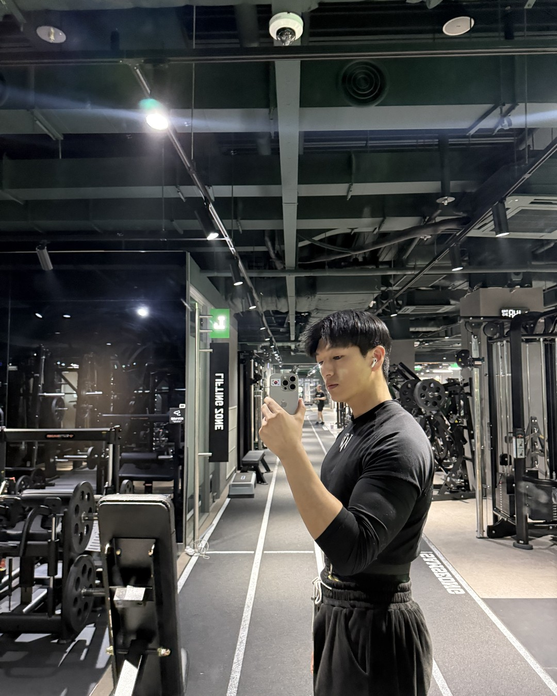
남자가 식으면,
친구들이 먼저 알아요
(당신보다 먼저요.)
1/14
@mszexc
넘겨보세요 →
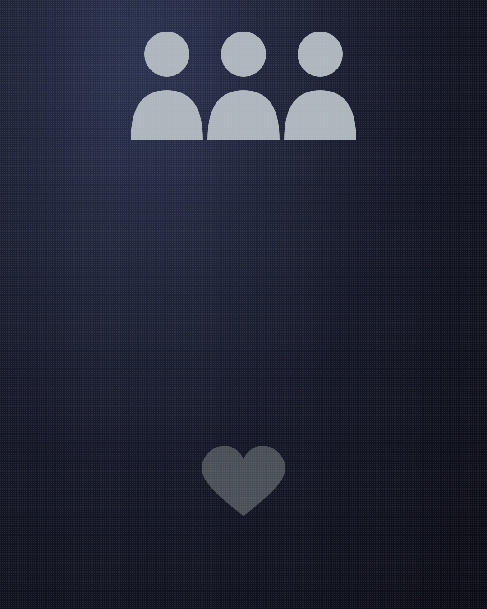
남자는 마음이 식으면
친구들 앞에서 먼저 티가 나요.
2/14
@mszexc
남자들끼리 하는 말 #54
왜냐하면
남자는 친구들 앞에서 제일 솔직하거든요.
(여자친구 앞에서는 괜찮은 척해도.)
3/14
@mszexc
남자들끼리 하는 말 #54
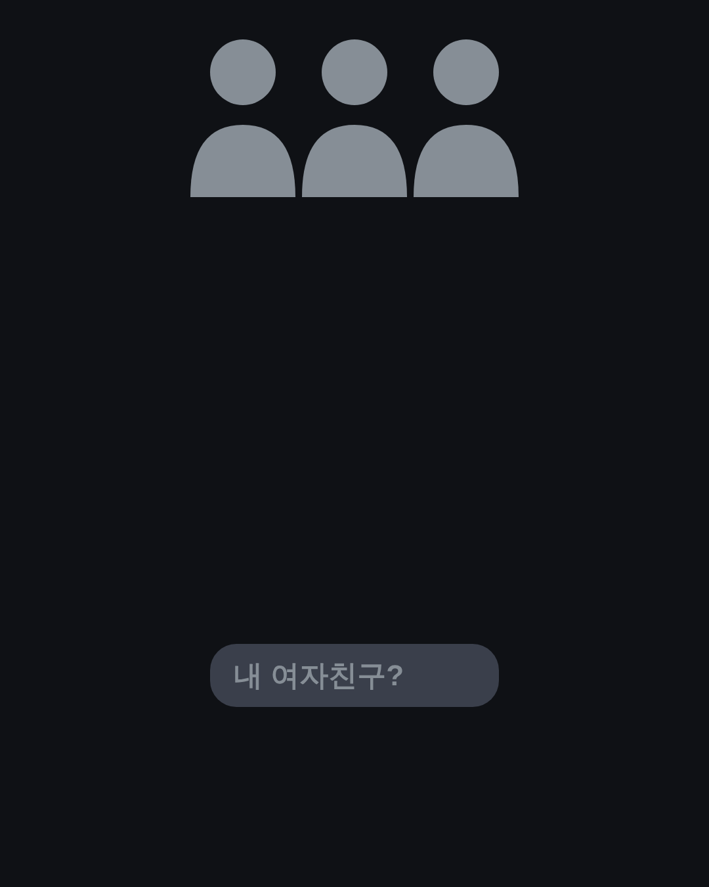
첫 번째.
친구들 앞에서 당신 얘기가 줄어요.
(묻지도 않았는데 자랑하던 사람이었다면.)
4/14
@mszexc
남자들끼리 하는 말 #54
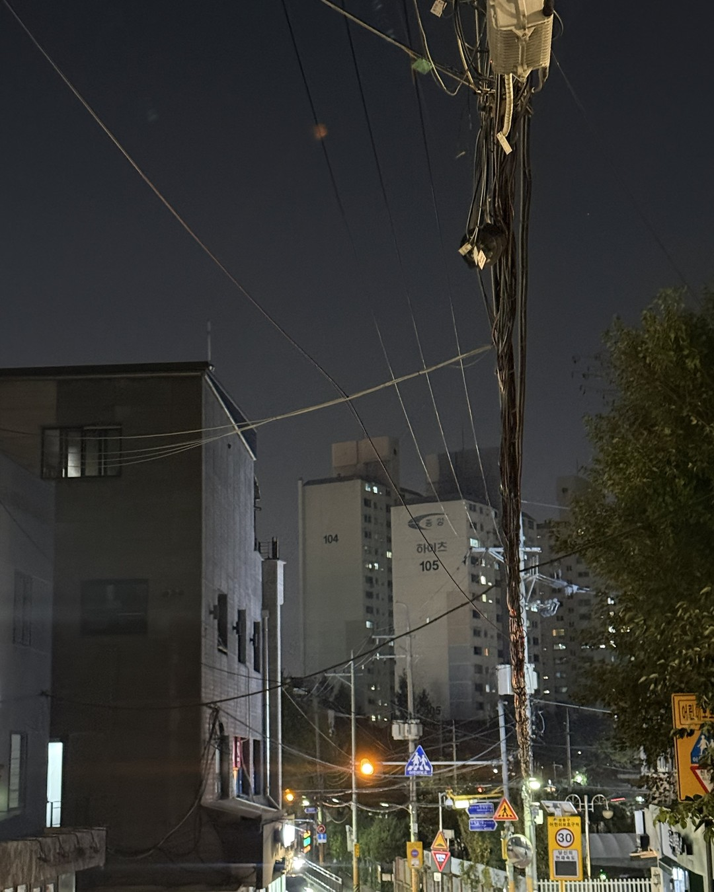
두 번째.
친구들 앞에서 당신 전화를 안 받아요.
("이따 할게"가 늘어요.)
5/14
@mszexc
남자들끼리 하는 말 #54
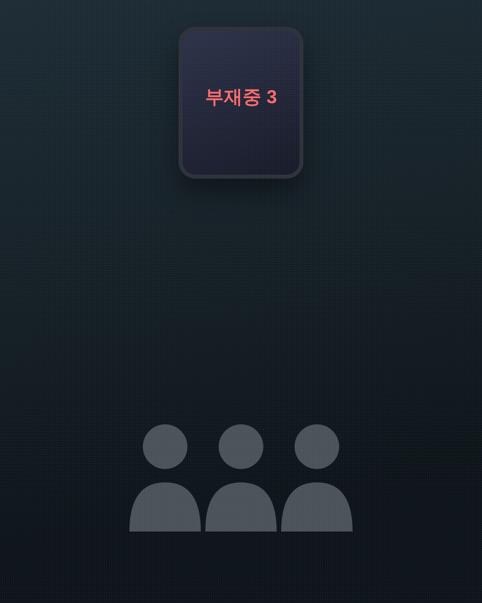
세 번째.
친구 모임에 당신을 안 불러요.
(소개하고 싶은 마음이 줄어든 거예요.)
6/14
@mszexc
남자들끼리 하는 말 #54
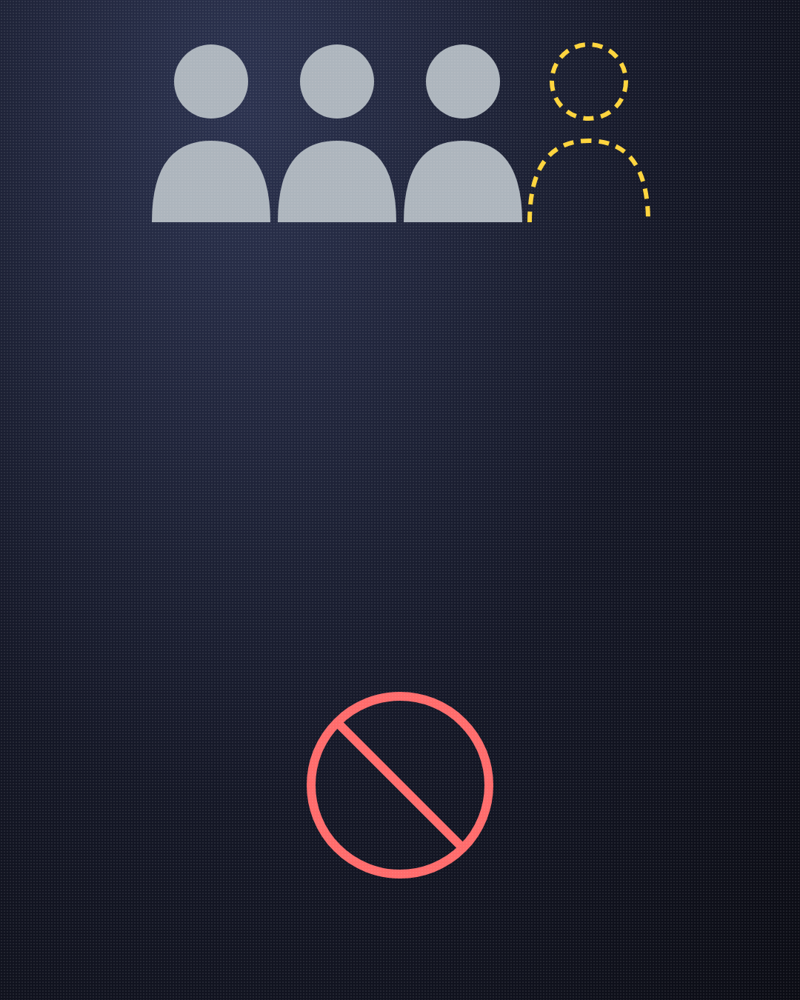
네 번째.
친구들한테 연애 고민을 꺼내요.
(남자가 고민을 꺼내면, 이미 오래 생각한 거예요.)
7/14
@mszexc
남자들끼리 하는 말 #54
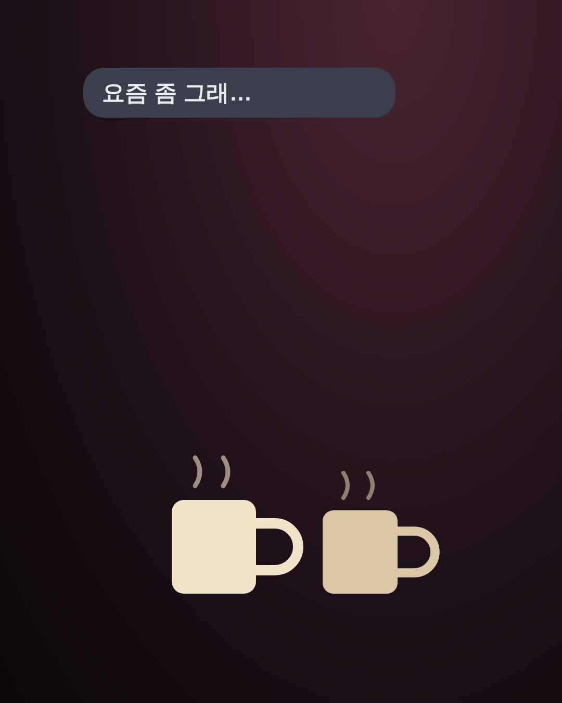
남자들끼리는 이렇게 말해요.
"요즘 좀 그래. 모르겠다, 그냥."
("모르겠다"는 마음이 기울었다는 말이에요.)
8/14
@mszexc
남자들끼리 하는 말 #54
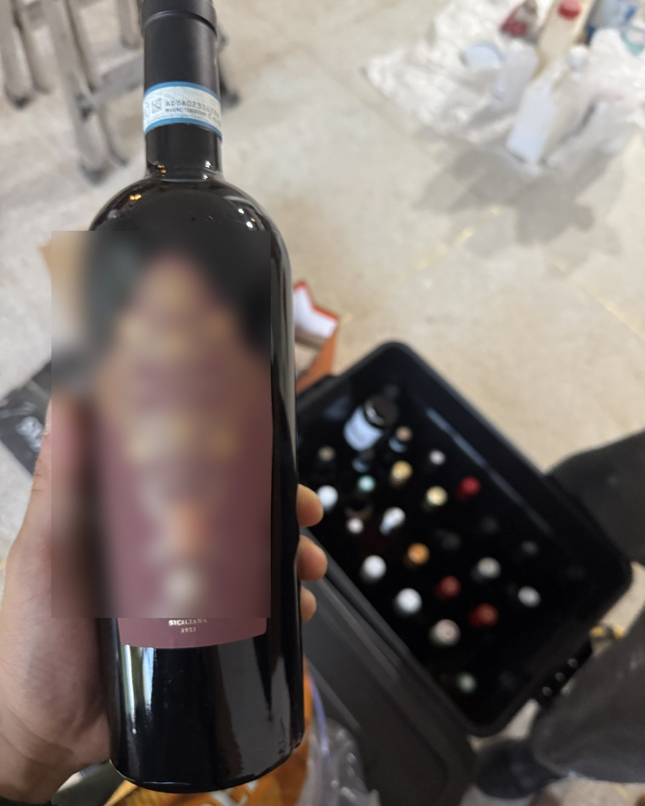
그래서 그의 친구가
당신을 조금 다르게 대하기 시작해요.
(괜히 미안해하거나, 말을 아끼거나.)
9/14
@mszexc
남자들끼리 하는 말 #54
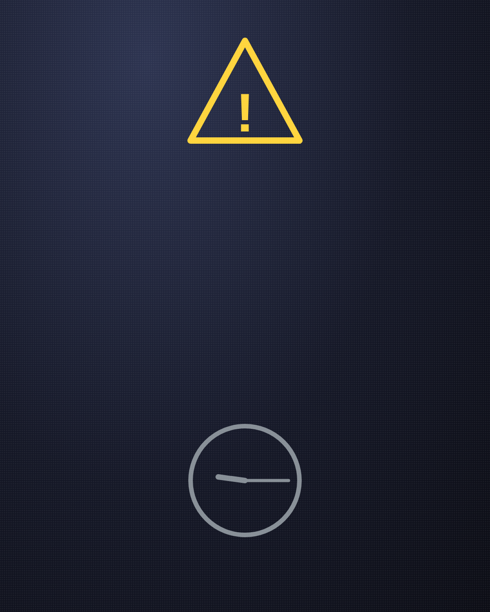
하지만 이것 하나로
단정하지는 마세요.
(바쁜 시기나 친구와의 일 때문일 수도 있어요.)
10/14
@mszexc
남자들끼리 하는 말 #54
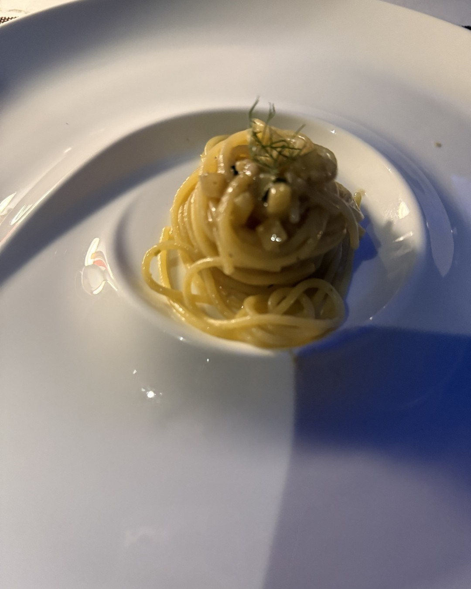
확인하는 법은 간단해요.
"이번에 네 친구들이랑 같이 밥 먹을까?"
11/14
@mszexc
남자들끼리 하는 말 #54
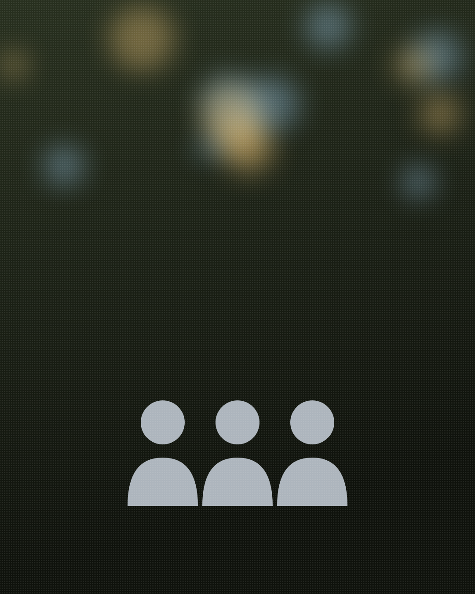
이 말에 반가워하면
괜찮아요.
(핑계부터 나오면, 그때는 대화가 필요해요.)
12/14
@mszexc
남자들끼리 하는 말 #54
친구 앞에서의 남자가
진짜 그 남자예요.
13/14
@mszexc
남자들끼리 하는 말 #54

이것만 기억하세요.
남자의 마음은 친구 앞에서 먼저 보여요.
남자가 하는 말의 뜻은 전자책 1·2권에 · 프로필 링크에서 무료로 받아보세요
14/14
@mszexc
남자들끼리 하는 말 #54